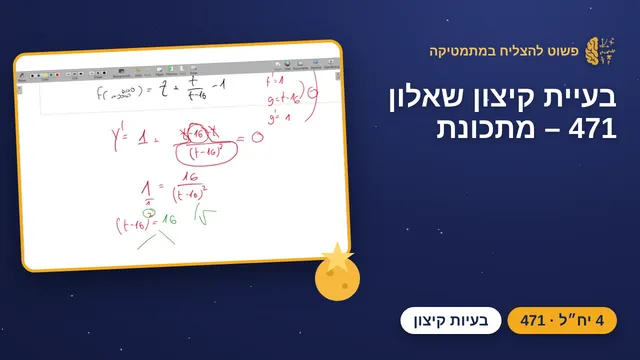
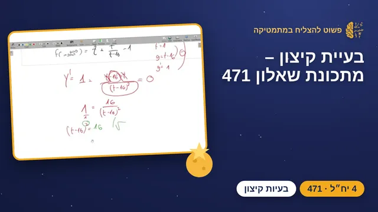
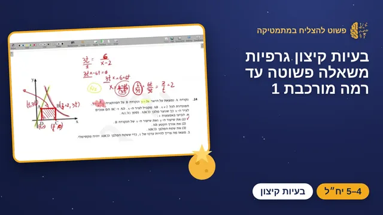
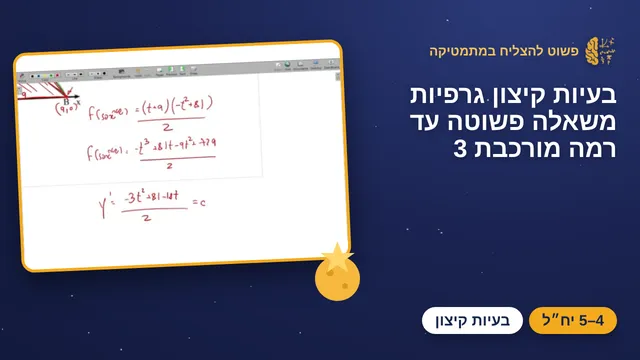
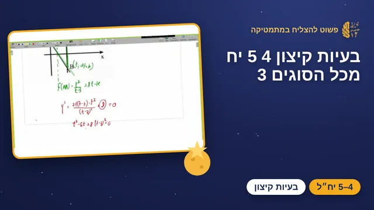
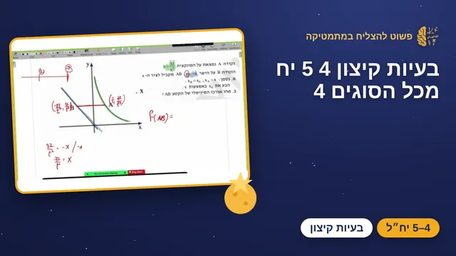
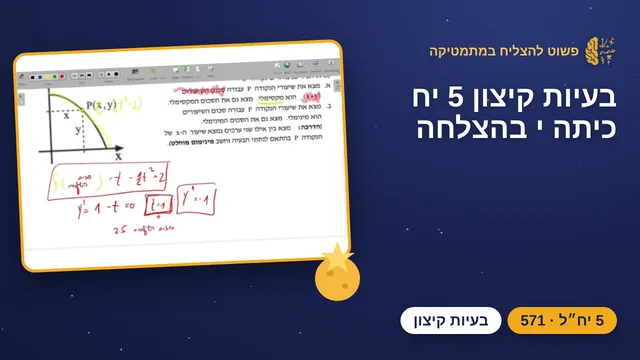
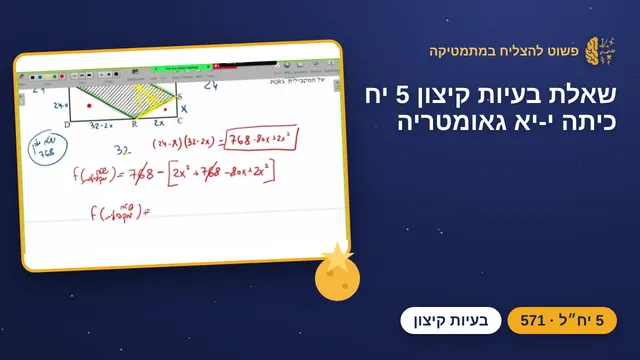

פשוט להצליח במתמטיקה › כל הנושאים › בעיות קיצון
בעיות קיצון – סרטוני הסבר ותרגול
42 סרטוני הסבר ותרגול בנושא בעיות קיצון – לכיתה ט׳, שאלון 471, שאלון 571. כל נושא מוסבר מהקל אל הקשה: קודם הרעיון, אחר כך תרגילים, ובסוף שאלות בסגנון בגרות. הכול בחינם, בשיטת "פשוט להצליח".
רוצים לעקוב אחרי ההתקדמות?נרשמים בחינם, וכל סרטון שראיתם מסומן ✓. ממשיכים מכל מכשיר.
הצטרפות בחינם ←בעיות קיצון – כיתה ט׳ כל הנושאים של כיתה ט׳ ←
בעיות קיצון – שאלון 471 כל הנושאים של שאלון 471 ←
 בעיית קיצון – מלבן בין פרבולה לישר (שיעור מלא)
בעיית קיצון – מלבן בין פרבולה לישר (שיעור מלא) בעיית קיצון – משולש חסום במעגל (שטח מקסימלי)
בעיית קיצון – משולש חסום במעגל (שטח מקסימלי)
בעיית קיצון שאלון 471 – מתכונת בעיית קיצון – ריבוע ומשולש, סכום שטחים מינימלי
בעיית קיצון – ריבוע ומשולש, סכום שטחים מינימלי בעיית קיצון – טרפז בין גרף f(x)=−4∕x² לישר y=2
בעיית קיצון – טרפז בין גרף f(x)=−4∕x² לישר y=2 המהות של פונק ונגזרת ואיך מוציאים נק' קיצוןבעיות קיצון – מילים למשוואות 4 5 יח
המהות של פונק ונגזרת ואיך מוציאים נק' קיצוןבעיות קיצון – מילים למשוואות 4 5 יח מה עושים בבעיות קיצון – תהליך עבודה
מה עושים בבעיות קיצון – תהליך עבודה בעיות קיצון 4 5 יח כיתה י-יא
בעיות קיצון 4 5 יח כיתה י-יא
בעיית קיצון – מתכונת שאלון 471 בעיות קיצון גאומטריה שאלון 471 2
בעיות קיצון גאומטריה שאלון 471 2 בעיות קיצון גאומטריה שאלון 471 1
בעיות קיצון גאומטריה שאלון 471 1 בעיות קיצון גאומטריה שאלון 471 – הסבר הסיפור
בעיות קיצון גאומטריה שאלון 471 – הסבר הסיפור בעיות קיצון גאומטריה שאלון 471
בעיות קיצון גאומטריה שאלון 471 בעיות קיצון גאומטריה שאלון 471 3
בעיות קיצון גאומטריה שאלון 471 3
בעיות קיצון גרפיות משאלה פשוטה עד רמה מורכבת 1 הסבר מהות בעיות קיצון ושאלה פשוטה
הסבר מהות בעיות קיצון ושאלה פשוטה השלבים של בעיות קיצון גרפיות
השלבים של בעיות קיצון גרפיות
בעיות קיצון גרפיות משאלה פשוטה עד רמה מורכבת 3 בעיות קיצון גרפיות משאלה פשוטה עד רמה מורכבת 2
בעיות קיצון גרפיות משאלה פשוטה עד רמה מורכבת 2 בעיות קיצון 4 5 יח מכל הסוגים 1
בעיות קיצון 4 5 יח מכל הסוגים 1
בעיות קיצון 4 5 יח מכל הסוגים 3 בעיות קיצון 4 5 יח מכל הסוגים 2
בעיות קיצון 4 5 יח מכל הסוגים 2
בעיות קיצון 4 5 יח מכל הסוגים 4 בעיות קיצון – הסבר התהליך ותרגיל בגרות 4 יח (מומלץ גם ל-5 יח)
בעיות קיצון – הסבר התהליך ותרגיל בגרות 4 יח (מומלץ גם ל-5 יח) בעיות קיצון – שאלת בגרות קיץ 2023 מועד ב שאלה 8 481
בעיות קיצון – שאלת בגרות קיץ 2023 מועד ב שאלה 8 481 בעיות קיצון – שאלת בגרות קיץ 2023 שאלה 8 481בעיות קיצון – שאלת בגרות חורף 2021 מועד מיוחד שאלה 8 481
בעיות קיצון – שאלת בגרות קיץ 2023 שאלה 8 481בעיות קיצון – שאלת בגרות חורף 2021 מועד מיוחד שאלה 8 481בעיות קיצון – שאלון 571 כל הנושאים של שאלון 571 ←
בעיית קיצון – מלבן בין פרבולה לישר (שיעור מלא)בעיית קיצון – משולש חסום במעגל (שטח מקסימלי)בעיית קיצון – ריבוע ומשולש, סכום שטחים מינימליבעיית קיצון – טרפז בין גרף f(x)=−4∕x² לישר y=2המהות של פונק ונגזרת ואיך מוציאים נק' קיצון בעיות קיצון 5 יח 571 מדהימות ומתוקות 2
בעיות קיצון 5 יח 571 מדהימות ומתוקות 2 בעיות קיצון 5 יח 571 מדהימות ומתוקות 3
בעיות קיצון 5 יח 571 מדהימות ומתוקות 3 בעיות קיצון 5 יח 571 מדהימות ומתוקות 1
בעיות קיצון 5 יח 571 מדהימות ומתוקות 1
בעיות קיצון 5 יח כיתה י בהצלחהבעיות קיצון – מילים למשוואות 4 5 יחמה עושים בבעיות קיצון – תהליך עבודה
שאלת בעיות קיצון 5 יח כיתה י-יא גאומטריהבעיות קיצון 4 5 יח כיתה י-יא חקירת פונקציה עם בעיית קיצון גרפית 5 יח
חקירת פונקציה עם בעיית קיצון גרפית 5 יח חקירת פונקציה עם בעיית קיצון גאומטרית 5 יחבעיות קיצון גרפיות משאלה פשוטה עד רמה מורכבת 1הסבר מהות בעיות קיצון ושאלה פשוטההשלבים של בעיות קיצון גרפיותבעיות קיצון גרפיות משאלה פשוטה עד רמה מורכבת 3בעיות קיצון גרפיות משאלה פשוטה עד רמה מורכבת 2
חקירת פונקציה עם בעיית קיצון גאומטרית 5 יחבעיות קיצון גרפיות משאלה פשוטה עד רמה מורכבת 1הסבר מהות בעיות קיצון ושאלה פשוטההשלבים של בעיות קיצון גרפיותבעיות קיצון גרפיות משאלה פשוטה עד רמה מורכבת 3בעיות קיצון גרפיות משאלה פשוטה עד רמה מורכבת 2 בעיית קיצון 5 יח 581 עם גאומטריה
בעיית קיצון 5 יח 581 עם גאומטריה בעיית קיצון 581
בעיית קיצון 581 בעיות קיצון 806 נדיר ביופיו 2
בעיות קיצון 806 נדיר ביופיו 2 בעיות קיצון 806 נדיר ביופיו 1בעיות קיצון 4 5 יח מכל הסוגים 1בעיות קיצון 4 5 יח מכל הסוגים 3בעיות קיצון 4 5 יח מכל הסוגים 2בעיות קיצון 4 5 יח מכל הסוגים 4בעיות קיצון – הסבר התהליך ותרגיל בגרות 4 יח (מומלץ גם ל-5 יח)
בעיות קיצון 806 נדיר ביופיו 1בעיות קיצון 4 5 יח מכל הסוגים 1בעיות קיצון 4 5 יח מכל הסוגים 3בעיות קיצון 4 5 יח מכל הסוגים 2בעיות קיצון 4 5 יח מכל הסוגים 4בעיות קיצון – הסבר התהליך ותרגיל בגרות 4 יח (מומלץ גם ל-5 יח) שאלה 6 בגרות 806 581 – פונקציה רציונלית עם בעיית קיצון
שאלה 6 בגרות 806 581 – פונקציה רציונלית עם בעיית קיצון בעיות קיצון 5 יח 581 – שאלה איכותית
בעיות קיצון 5 יח 581 – שאלה איכותית